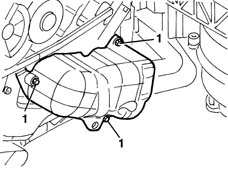
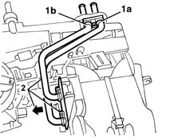
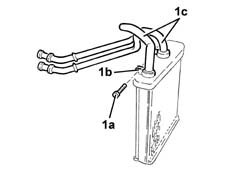

5040C54 air conditioner heater radiator - r+r with air conditioner box removed
- Path
- Procedures > 50 AUXILIARY UNITS > 5040 AIR CONDITIONING CASING AND COMPONENTS > 5040C air conditioner box and components > 5040C54 air conditioner heater radiator - r+r with air conditioner box removed
- Kind
- repair procedure (removal / refitting; the operation number is the code)
- Applies to
- all engines; all production periods
- Interactive page
- https://sloeber94.github.io/elrnDB-lYpsln/en/#/2429325
Applies to: all engines; all production periods
 Removing
Removing
 Refitting
Refitting1. Undo the three bolts and remove the water pipe guard.

Applies to: all engines; all production periods
1. Undo the bolt (1a) and remove the bracket (1b) fixing the pipes.
2. Extract the heater complete with pipes.

Applies to: all engines; all production periods
1. If necessary, undo the bolts (1a) for the collars (1b) and remove the inlet and outlet pipes (1c).

Applies to: all engines; all production periods
Refitting
RemovingCheck that the radiator is intact, that there are no leaks and that there is no damage or deposits of dirt on the finned surface.
If removed, fit the inlet and outlet pipes on the heater, keep the collars in position and tighten the bolts.
Fit the heater in position.
Position the pipe mounting bracket and fasten it using the bolt.
Position the shield and fix it using the bolts